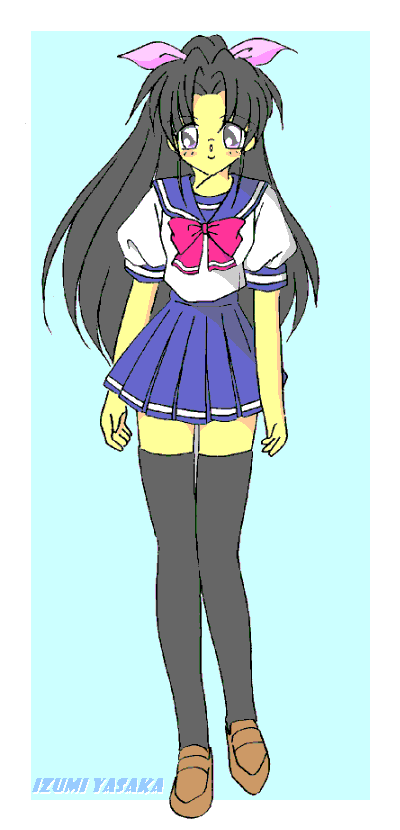

|
Miss-ing 少女進行形物語
by ＴＷＯ−ＢＩＴ
第一話 いきなり少女
キーンコーンカーンコーン—— スピーカーから流れるチャイム音と同時に、その日の最後の授業が終わった。 帰り支度にざわめき出す教室も、ものの１０分足らずで清掃担当の生徒以外の姿が消えた。 「八坂君、ゴミ捨ててきたわよ」 「ご苦労さん、碓氷さん」 ゴミ箱を持って戻ってきた女子生徒——碓氷茜に労いの声を掛けるのは、黒板を水拭きしていた八坂出雲だった。 完璧に綺麗になったのを確かめて掃除道具をしまう。 教室を出ると、真っ直ぐ階段に向かう出雲を茜が呼び止めた。 「あっ、八坂君」 「ん？」 「あの、図書室って何処でしょうか？ 転校してきた時に教えて貰ったんですが、忘れてしまって」 「図書室なら——」 説明しようと口を開け、茜が転校してきてまだ間もないことを思い出す。 「案内しようか？」 「あっ、お願いします」 人気の無い渡り廊下を歩く二人。 「碓氷さんは、もう学校には慣れた？」 手持ちぶさたげに訊ねる出雲。 「学校に関しては大体は慣れましたけど、街の方がまだ」 茜は小さくはにかんだ。 「私が前居たトコは田舎の町でしたから。こちらの人の多さには圧倒されますし、散歩に出れば道に迷ってます……目印を撒いてもハトに食べられますし」 「ここらへんは結構複雑だからな。高層ビルが増えたから遠くを見渡せないし、よそからの人じゃ道を覚えるのが難しいかな——あっ、図書室はこの階」 階段から逸れ、突き当たりの扉を潜る。 「ありがとうございます」 「じゃあ、俺は——」 「あれ？ 出雲じゃないの」 立ち去ろうとするよりも先にカウンターから声が掛けら、苦み混じりの返事を返す出雲。 「よっ、奈月先輩」 そこには、ショートカットに眼鏡姿の知的な印象を匂わせる美人が佇んでいた。 「珍しいわね、女の子と一緒だなんて」 フレームのない眼鏡越しに茜を見つめる奈月。 「知り合いなんですか？」 「あっ、この人は姫川奈月先輩で図書館の主にして図書委員長。そして、幼なじみ兼天て——のわぁ！？」 「誰が天敵よ、誰が！」 言い切る前にカウンターに置かれた百科事典で殴られる出雲だった。 「それでそっちの娘は？ 見かけない顔してるけど」 「彼女は先月うちのクラスに転校してきた碓氷茜さん」 「姫川先輩ですね。宜しくお願いします」 丁寧な挨拶に対し、 「奈月で良いよ、奈月で。あたしは茜ちゃんって呼ばせて貰うから」 奈月はざっくばらんに応じた。 「ここには本でも借りに来たの？」 「あっ、この街の地図でもあったら見せて貰おうかと」 「地図？」 「明々後日で一学期も終わりますから、夏休みに入ったらこの街を探索してみようと思って」 「ふーん。地図ならこっちよ」 図書室には三人の他に誰も居ないのを良いことに、カウンターを離れて案内する奈月。 「この棚が地図かな」 そこには世界地図や日本地図を始め、近場のタウンマップに抜け道のロードマップまで多種多様に揃っていた。 「相変わらず、この図書館の品揃えは常軌を逸してるな」 本と本の間に挟まるように置いてあった紙片を開ければ、それは江戸初期の古地図だった。 探せば、宝の地図ぐらい発掘できるかも知れない。 「北嶺高校図書委員は全ての『智』を収集することを存在意義としているからね。ことマニアックでコアな書籍に関しては国会図書館にだって負けない自負があるわ」 「はぁ……凄いんですね」 キッパリ言い切る奈月に圧倒され、そう返すしかなかった茜。隣では出雲が疲れたような顔をしていた。 「奈月先輩。本は何冊まで借りられるんですか？」 「一人４冊までで２週間だけど——地図なら借りるんじゃなくてコピーしてく？」 奈月は肩越しに突き立てた親指で司書室を指さしていた。 司書室の狭い部屋にコピー機の音が響く。 「ふーん。茜ちゃんってそんな山奥に住んでいたんだ」 「はい。一番近くのコンビニ行くのに山二つ越えるんですよ」 「うわぁ。それは凄いね」 女二人の姦しい会話に付いていけず、 「じゃあ、俺、先にかえ——ぶげら！？」 飛んできた国語辞典が打ち当たり吹き飛ぶ出雲。そのまま司書室に積んであった未整理の本に突っ込んだ。 「や、八坂君！？」 「ああ、大丈夫、大丈夫。出雲はこれくらいじゃ死なないから」 笑いながらアッケラカンと言い切る奈月に、 「打ち所が悪かったら死ぬぞっ！」 出雲が本の中から頭を出して睨み付ける。 「ったく、奈月ねぇはがさつなんだから。いくら美人でもそんなんだから恋人の一つもでき——どげっ！！」 再び飛んできた漢和辞典を顔面に受け、出雲は沈黙した。 「あ、あのぉ、本当に大丈夫なんですか？」 「平気よ、平気。いつも鍛えてあげてるから。すぐに回復すると思うわ」 呆然と見つめる茜を余所に、コピー機が出した用紙を集める奈月。 「これで一応全部だけど……この町のタウンガイドもあった方が良いわね」 本に埋もれてる幼なじみとそれを心配そうに窺っている後輩を残し図書室に戻る奈月だったが、すぐに戻ってきた。 「タウンガイド、貸し出し中だったみたいね」 貸し出しカードを調べる奈月。 「えぇっと、あったあった——って、借りてるのはあいつか」 眉を顰める奈月に怪訝そうに茜が聞いてきた。 「お知り合いなんですか？」 「姫川美奈。今年先生になったばかりの新人教師にして、あたしの敵よ」 「はぁ、敵なんですか？」 「美奈先生は奈月先輩の姉だ」 唖然と返す言葉が浮かばない茜に、本の下からくぐもった出雲の注釈が付いてきた。 「仲悪いんですか？」 「んにゃ。仲はいいと思うぞ。ただ、そりが合わないだけじゃないかな」 よく解らない内容に、ただただ小首を傾げる茜だった。 「そう言うことで、出雲。代わりに本を回収してきて。家では見かけなかったから、多分職員室の机の上にでも転がっていると思うから勝手に持ってきて良いわよ。どうせ、貸出期限切れてるんだし」 「嫌だよ！ 美奈ねぇに捕まったら何されるか解ったモノじゃないからな」 半分出かかった身体を再び本の山の中へと逃げ込ませる。 「亀か、あんたは」 嘆息し、 「じゃあ、本を取ってくるから二人はここで待っていて。あっ、出雲はその崩した本をちゃんと戻しておいてね」 『閉館』の札を片手に司書室から出ていく奈月。ついでとばかりに、まだ締めるには早い図書室を勝手に終わらせていく。 「行ったか」 足音が遠ざかるのを確かめてから、本の中から這いだしてくる。そんなクラスメートの姿を茜は楽しげに笑った。 「クスッ。楽しそうですね」 「そうか？」 身体に付いた埃を叩きながら応える。 「私が以前居たトコは殺伐としていましたからね。こんな——」 床に落ちてる辞書を二冊拾い上げる茜。それは先ほど奈月に投げつけられ、出雲に当たった本だ。 「当たり所さえ良ければ命を落とさない様なモノじゃなくて、掠りでもしたらお終いなモノばかりが飛んでき——」 不意に茜の身体が沈んだ。 翻すように身体を返し、手にした辞書を顔の前にかざす。 パリン！ トン、トン—— ガラスの割れる音に遅れて、鋭いモノが突き刺さる音が響く。 「え？」 「危ない八坂君、伏せてください」 反射的に伏せる出雲に合わせて茜は司書室の棚を手で突き、蹲る出雲の上に大量の本を散らした。 トン、トン、トン、トン、トン—— 風きり音と共に、書籍に何かが突き刺さる。 「もう、感づかれたようですね」 焦りを含んだ声が出雲の耳に届いてきた。 「碓氷さん？」 「八坂君はここでじっとしていて下さい」 そう言い残すと、司書室を飛び出す茜。彼女の足音から屋上へと向かったのが解る。 「何なんだよ、一体？」 本の下から再び這い出せば、上辺に乗っていた本の幾つかに星形の薄っぺらな物体が刺さっていた。 鉄色のそれは、 「手裏剣？」 忍者が使うそれそのものだった。 「どういうことなんだよ、これ？」 手裏剣が窓をぶち破って飛んできたのは解った。 「碓氷が狙われているって言うのか？」 自分に狙われる理由が無い以上、それしか思い当たらない。 「何故あいつが？」 幾ら考えようが答えの出ない疑問が過ぎったが、 「血？ 碓氷のヤツ、ケガでも負ったのか？」 床に転々と着く血の後にそれを考えるのは止めた。 血の後と本に刺さる手裏剣を見比べる出雲。意を決したように開け放たれたままの扉を振り向き、 「くそったれ！」 茜の後を追うように駆けだした。 このまま行けば何かに巻き込まれる。漠然とした不安が浮かぶ。でも、それで足を止め、見て見ぬ振りなんてする気も起きない。 それになにより、 「あの惨状を見た奈月ねぇに何言われるか解ったモノじゃないからな」 幼なじみの少女の怒りを一人で向かえるのが恐かった。 血の跡はやはり上へと続いていた。 階段を駆け上り屋上への扉を開ければ、西に傾いた陽の輝きがその空間を緋色染め上げていた。 「どこだ？」 辺りを探すが人影らしいモノすら見えない。そこへ、 キィーン！ 甲高い金属音に振り返れば、斜陽をバックに影が飛び跳ねてるのが解る。 キィ、キィーン！ 二度三度と打ち合う金属音。眩しさに細めた出雲の目が捉えたのは、黒装束の忍者と闘うセーラー服姿の同級生だった。 ポニーテールの髪を靡かせながら斬り合う茜。 「碓氷！」 思わず叫んだ声に、 「八坂君！？」 注意が逸れた茜。隙ありとばかりに忍者の凶刃が襲ってきた。 「きゃぁ！」 斬りつけられ、屋上へと失墜する茜。血を流す左脚を押さえながら忍者を睨み付ける。何とか体勢を立て直そうとするが脚に痺れが走った。 「これまでね、碓氷茜。いくら貴女でも、解毒するには数分は掛かるはず」 歯噛みする茜。傷こそ浅いが、刃に塗られていた毒によって足に痺れを感じた。それは微かな制約でしないが、実力が均衡した相手を前にしては致命的なものでもあった。 「いくら里を抜けようとしても、あなたに頭領の血が流れる以上、それは敵わぬ夢と知りなさい」 目の前で展開される現状に、付いていけない出雲。ただ、 （俺のせい？ 俺のせいなのか！？ 俺が声を掛けたから——） 今の茜の危機は自分が招いたことくらいは解る。だからこそ、 「うわぁぁぁ！！」 そんな茜を助けようと、形振りかまわず突っ込んでいった。 「無益なことを」 あまりに無謀な出雲を一笑に伏し、 「忍法影縛り」 夕陽に伸びた彼の影にくないを一本突き立てれば、それまでの勢いが夢幻の如く、出雲の身体が硬直しその場に固まった。 「な、なんだよ、これ！？」 「部外者はそこで静かにしていて下さいまし」 口調こそはやんわりとしてるが、その殺気の籠もった眼力に押し黙るしかない出雲。 「こうなっては抵抗も何もしませんね」 諦めたように大きく息を吐く茜。 「もう少し都心の女子高生を楽しみたかったんですが……ひと思いに煮るなり焼くなりして下さい」 「覚悟が良いですね」 「ただし、八坂君。彼には手を出さないようにお願いします」 「元よりそのつもり。後でこの記憶を消して起きますわ」 目の前で複雑な印を結んでいく忍者。その存在がどうでもいいかの様に、茜は横目で出雲を見る、その茜の瞳が穏やかなまでに優しく、 「驚かせたみたいでゴメンね、八坂君。私、抜け忍でしたの。都会の生活に憧れて逃げてきたんですが、ダメでした」 寂しかった。 「では、喰らいなさい、忍法て————！？」 「くそったれ！」 忍術を放つ瞬間、出雲の身体が茜の前に飛び込んでくる。 それは天の悪戯か。夕陽に掛かる雲一つ分の影が出雲の縛りをかき消したのだ。 茜を庇うように立ちふさがる出雲。彼の身体は思いっ切り術を喰らってしまった。 眩しい閃光が屋上を照らしだす。 「な、な、な、なんてコトしてくれたんです！！」 光が納まって最初に叫び声を上げたのは術を発した忍者だった。顔を覆う仮面を外せば、そこに現れたのは茜と瓜二つの少女。 「す、菫！ 普通の人を巻き込んで、どうしてくれるんですか！！ 外の方にまで手を出したことがばれたら、私もあなたもどんなことになるか解っているんでしょ！」 「だ、だって、茜。ま、まさかあのタイミングで飛び込んでくるとは思わなかったから……」 おろおろとうろたえる忍者こと菫。先ほどまでの気丈な振る舞いと違い、その目尻には涙が浮かんでいた。 「う……ん…………」 「八坂君！」 目を覚ました出雲に慌てて駆け寄る。 「あっ、無事だったんだ、碓氷さん。良かった」 「良かったじゃありません！」 激しく叱咤する茜。 「解ってるんですか！ あなたの行った行為がどういうモノか？」 「どういうモノ？」 「自分の身体を確かめてください」 「身体？」 身を起こし下を見れば、 「え？」 まず目に入ったのは、シャツを突き上げる二つの膨らみ。触れてみれば確かな質感が伝わってくる。 どういうことかと目で問えば、更に下を確かめるように無言で訴えてきた。 恐る恐る股間へと伸ばす手。 （あっ、無い） 漠然と浮かんだ考え。 しばしの沈黙。頬を引きつらせながら茜を見れば、彼女の代わりに申し訳なさそうに応える菫がいた。 「あなたに放った術は忍法転化の術。性転換を強制的に行う術なんです」 「え？」 「我が碓氷一族は女系の忍者——くノ一集団なんです。ただそれでは子孫が残せませんので、若い者の中で一番優秀な忍者を転化の術で男にし子を成すのです。申し遅れましたが、私は碓氷菫。茜の双子の妹です」 「双子の妹————じゃなくて！ 俺は元に戻れるのか？」 叫ぶ声音もすっかりと女性のモノに変じていた。 「そ、それが……何と言えばいいのか……」 言いにくそうに言葉を濁す菫。そんな妹の代わりに茜が口を開いた。 「我が一族に伝わる転化の術は、その術が通じるのは人生で一度だけなんです。一度転化した性は、私達の術では戻すことが出来ません」 死亡通告をも思わせる内容に固まる出雲。 「女……一生女……俺は、一生女なのか…………たっはっはっは」 「幸い八坂君は元々童顔の美形でしたので、かなりの美人になっていますので気を落とさないでください」 「そんな慰めでで立ち直れるか！！」 叫びは虚しく夕焼け空に消えた。 （家族になんて——って親父もお袋も海外にいるからしばらくは誤魔化せるか。それよりも問題は——） 「隣りに住むあいつらにばれたらどれだけ大笑いされるか」 「あっはっはっはっはっはっは♪」 「クスクスクス♪」 「そうそう、こんな感じに——って、おい！ いつからそこにいるんだよ、奈月ねぇに美奈ねぇ！」 扉の影から現れたのは奈月と、その彼女によく似た顔立ちでありながら、どこかほのぼのとした雰囲気を漂わせる女性だった。 「いつからって、目映い閃光が見えた時からかな？」 「あらあら、ダメですよ出雲ちゃん。女の子なんだからそんな乱れた言葉遣いしてちゃ、奈月ちゃんみたいに男の子に恐れられる女の子になっちゃうわよ」 「姉さん！」 ∫
司書室に戻ってきた４人の少女。一番最年長で先生でもある美奈の姿はそこにはなかった。 「しっかし面白いことになったわね」 中央に立たせた出雲の周りを回っては、面白そうに検分する奈月。隅の方では碓氷姉妹が恐縮そうに縮こまっていた。 「胸はだいたいＢカップってトコか。身長は縮んでるし骨格も女の子になってるのね。肩幅は狭くなっていて、お尻の方は大きくなってるわね」 「うわぁ！？ いきなり尻を撫でるな、奈月ねぇ！！」 触れられた尻を押さえて睨み返す出雲だが、奈月は気にも止めていない。 「しっかし、縮んだ身長の大半が上半身だなんて——足が長く見えて幸せね」 開襟シャツはかなりだぶついているのに、ズボンの方は裾を曲げることなく履いていられた。もっとも、ウエストには隙間が空き、ヒップはパンパンに張っていた。 「質量保存の法則なのかしら？ 男の肉体と女の肉体での差分が髪の毛に代わるなんて面白いわね」 「いてって、いて！ 髪の毛引っ張るなよ」 尻近くまで伸びる髪の毛を引っ張る奈月。 「ねぇ、茜ちゃんに菫——ちゃんだっけ？」 呼びかけられてビクッと肩を揺らす二人。 「何ですか、奈月先輩……」 「別にあたしは怒ってないんだから、そう恐縮そうにしないでよ」 二人のあまりの脅えように苦笑しながらも、会話を続ける。 「男から女になった場合、髪の毛に化けるのは解ったけど、もし逆の場合はどうなるの？」 「そ、それは……髪の毛の一部が分解され肉体の方に転じます……ただ、十分な長さがないと禿げてしまうことになりまして……」 「茜の髪の長さでは禿は確定です」 「菫！」 付け加えられた言葉に妹を窘める姉だったが、その真意に奈月は気付いていた。 「ふーん」 茜を眺め眇める奈月。 「茜ちゃんは禿になるのが嫌で、その忍者の里から逃げ出したのね」 「う……」 図星を突かれ茜は言葉に窮す。 一族のため、男になること自体は問題にはしてなかった茜。ただ、今おこなって禿げるのが嫌で、男になっても髪の毛が残るほどの長さになるまでと、里を抜け出したのだ。 そんな姉の気持ちを百も承知の菫。ただ、姉が居なくなったことで次に白羽の矢が立てられるのは自分だと知っていたからこそ、必至に茜を追い掛けてきたのだ。 「それで二人とも。戻す方法は無いの？」 「はい。先ほども言ったように転化の術が通じるのは一生涯に一度のみ。一度転化した者には何度同じ術を掛けても通じることは無いと言われています」 男に戻れないと再認識させられ落ち込む出雲。そんな彼を気にも止めずに会話を続ける。 「転化以外の方法は？ それに、その転化の術って最初に誰かが編み出したんでしょ？ その絡繰りを紐解き、新たな術に組み直すことは？」 「あいにくと、この術の本質を理解する者は今の里には居ません」 「伝わってるのは利用方法と効果だけってコト？」 「はい。ただ、里の文献を漁れば何か解るかも」 「里の文献ね。曖昧だけど、それに頼るしかないか……まぁ、あたしはあたしでここの書物から戻る方法を探すかな」 「奈月ねぇ」 珍しく助けてくれる幼なじみに感激する出雲だったが、 「調べるだけ調べて、戻る方法が見つからなかった方が出雲も絶望して面白そうだからね」 意地悪なトコは簡単に変わるわけでもなかった。 「でも、なぜ二人ともそんなに出雲が女性になったことを気に病むの？」 「それはその……許可無く外の人間に手を出してはいけないって掟があるんです。もしそれがばれたら……その者は転化の術で男にされるんです。しかもその後、里の者とは子を成すことも禁じられ、一生一人で暮らさねばならないのです」 「…………禿頭で」 茜の言葉にポツリと続けた菫の呟きにはただならぬ悲壮感があった。 「そんなに禿になることが嫌なのね……あなた達の一族は」 あまりの雰囲気に、乾いた笑いで答えるしかなかった奈月。 「必ずや戻る方法を探してみせますので、このことは内密にお願いできませんでしょうか？」 「お願いします」 「俺は元に戻れるならそれでいいけど……」 「あたしは別に言わないわよ」 二人に言われ、碓氷姉妹は深々と頭を下げた。 「では、私は繋ぎとしてこの場に残り——」 「早速、私が里で調べてきます」 姉妹同士で頷き合ったかと思うと、菫が立ち上がる。 「あっ、そうそう、菫ちゃん」 窓枠に足を掛けたとこで奈月が思い出したように声を掛けた。 「何です？」 「あなた達の一族って、優秀な子孫を残すために『男』——の子種が必要なのよね？」 「はい、そうです」 「なら、どうして外の血を混ぜたりはしないの？」 「外の者では優秀かどうかの見極めが難しいのです。下手に愚劣な血を混ぜたりしたら、今まで積み重ねてきた血の重みが消えてしまいます」 「血の重みね……そんだけ濃い血を混ぜたりしたら、遺伝子疾患とか出てこない？」 「…………」 答えられない菫。茜も顔を伏せた。 事実そのせいで、里の出生率がかなり落ちてきていた。 「外の血の優劣が解らないのなら——はい、これ」 投げ渡されたのは科学系の雑誌。開いていたページにある文字を反芻する菫。 「精子バンク？」 「優秀な精子を売買してる商売よ。日本人でも登録してる人がいるはずだから、転化の術なんて使わずに、そこで精子でも買ったら？ 血も適度に薄まって一族繁栄に繋がるわよ」 「あっ、はい！」 嬉しそうに大きく返事をする菫。それを利用すれば、自分も茜も禿げる必要が無いのだ。 「それに、それを話題にしていれば、文献を調べ回っていても誰も気にも止めないと思うわよ」 その言葉にハッとする双子。このまま戻って転化の術を調べ回れば、周りに勘繰られることは必然だった。 動転していたとは言え、あまりに単純なことを見落としていた指摘に頭が下がった。 「ご助言感謝します。里の長老会に掛け合いたいと思います」 そう言い残して菫は消え去った。 その窓を感慨深げに見つめる奈月——と思いきや、 「あっ、貸し出しカード貰うの忘れていたわ」 「奈月ねぇ、菫さんはこの学校の生徒じゃないぞ」 「それもそうね。じゃあ、茜ちゃんが代わりに借りたってことにしておくわね」 「はぁ……」 どう答えて良いのか解らず、曖昧な返事を返す茜だった。 「ただいま。持ってきたわよ」 扉を開けて入ってきたのは美奈だった。その手には幾つかの紙袋がぶら下げられてる。 「お帰り姉さん。思ったより早かったわね」 「ちょー特急で行って来たからね」 走ってきたのか、呼吸を整えながら椅子に腰掛ける美奈。 「何して来たんだ？」 袋を覗き込んでいる奈月を怪訝に思いながら出雲は訊ねた。 「服を取ってきたのよ」 「服？ ま、まさか、俺が着るとか言うんじゃ！？」 「ええ。そのままじゃさすがにまずいでしょ？」 「べ、べつにこのままでも俺は問題ないってば」 「えぇー。でも、出雲ちゃん。そんな姿でクラスメートとかと遭遇したらどうするの？ キミの正体が八坂出雲ってばれたら、絶対変なことされるよ？」 「へ、変なコトだ？」 「決まってるじゃない。胸触ってきたりあそこ見てきたり——下手すれば、処女をクラスメートの誰かに捧げることになるかもよ」 処女の一言に顔面から血の気が失せた。 「ど、どうしてそんなことが言えるんだよ、奈月ねぇ」 「決まってるじゃない。男が女の子の胸を触れればチカンになるから誰もそんなリスクを犯してまで触ろうとは簡単にはしないでしょ。でも、それが元男の女の子ならどう？ それも、相手が知ってる男で、女になったばかりとあれば、何の気兼ね無く迫ってくるわね」 「うっ……」 野郎に迫られる姿を浮かべ身が退ける出雲。 「そんなのばれなければ良いだろ？」 「いくら美人に見えるからって言っても元々の顔の作りは同じなんだから、知り合いが見ればばれる可能性が高いわ。それで、もしばれてみたらどうするのよ？ 胸触らせてくれとか言ってくるに決まってるわ」 キッパリ切り捨てる奈月。隣で美奈もうんうんと同意していた。 「そう言うことでひとまず家に帰るまではこれに着替えなさい」 押し付けられたのは学校指定のセーラー服だった。 渋々ながらもそれに着替えようとシャツを脱ぎ始めれば、 「つまんない」 奈月が唐突にそんなことを言い出してきた。 「つまんない？」 「だって、今の脱ぎ方に恥じらいが無かったわ」 「恥じらいって言われても、別に人前で上半身裸になるなんて男なら普通だろ？」 「それはそうだけど……恥じらいとかは後で仕込むとして——って、何いきなりセーラー服を着ようとするのよ」 「え？ 着ろって言ったのは奈月ねぇ達じゃないか」 「奈月ちゃんは、ブラを着けなさいって言いたいのよ」 そう言って、美奈は袋の奥から白いブラジャーを取り出した。 渡されたブラジャーを手に顔を真っ赤に染める出雲。脱ぎっぷりには恥じらいは無かったが、今の出雲は明らかに動揺していた。 「どうしても付けなければダメなのか？」 「当たり前でしょ。幾ら薄暗いとは言っても、ノーブラで歩いていたら誰かに気付かれるわよ？ もしチカンの目にでも止まったらどうするのよ」 「それなら、サラシでも巻けば良いじゃないか？」 「サラシなんてダメよ。サラシじゃ育たないし、せっかく形良い胸をしてるんだから、ちゃんとブラを付けなさい。ねぇ、茜ちゃんもそう思うでし——茜ちゃん？」 自らの胸を押さえたまま反応がない茜に怪訝そうに歩み寄る。 「サラシはダメ……サラシじゃ育たない……」 ぼそぼそとした呟きに、奈月はセーラー服の裾の下から手を突っ込んだ。 「きゃぁ、何するんですか！？」 「忍者なんて古風なコトをやってると思えば、サラシを巻いていたわけ——ね♪」 引っこ抜いた奈月の手には、どうやって解いたのか白く長い布が合った。 「ちょ、ちょっと奈月先輩！？」 「しかしサラシだなんて、体育の着替えとかでは誰にかにつっこまれないの？」 手に持ったサラシを見つめながら不思議に思う奈月。 「着替えの時は幻術で皆さんには普通に見えてるようにしていましたので……」 胸の膨らみを腕で隠しながら茜は応えた。 「ふーん、忍術も便利なモノね。あっ、姉さん、ブラって幾つか持ってきてるわよね？」 「ええ。店の方にあったのを適当に持ってきたわよ」 別の袋には下着が数着入っていた。 「じゃあ、茜ちゃんもブラジャー付けようね。サイズが合わなかったら後で合うヤツをウチの方で見繕ってあげるわ」 「ウチで見繕う？」 「奈月ねぇ達の母親の奈々さんは輸入雑貨店をやっていてさ、外国製の女性物の服とかも扱ってるんだ。それで——」 自分の言葉に頬を引きつらせる出雲。 「美奈ねぇ。奈々さんにはこのコトは？」 「ちゃんと話しましたよ。それで売り物を貸してと言ったら喜んで提供してくれて、更には早く連れてきなさいって急かされちゃいました」 やんわりと告げられたソレは、ある意味一つの死刑通告だった。 「どうかしたんですか？」 「その奈々さんってヒト、可愛い娘を見ると着飾りたくなる習性の持ち主なんだ。もっとも、奈月ねぇも美奈ねぇもその習性は遺伝してるんだけどな」 今の自分が奈々の前に立ったら何をされるか解ったモノじゃない。そう不安がる出雲だった。 「さぁさぁ、茜ちゃんも脱いじゃってブラ付けましょ」 楽しげに迫る奈月に茜は仕方なくセーラー服を脱いで上半身を裸にした。 プルンとした茜の胸を見て、慌てて視線をずらす出雲。 「どうしたの？」 「いきなり女性の裸を見れば、誰だって慌てるだろ」 「女性の裸って言っても、今のあんただって女性でしょうに」 「俺の胸は俺のだから別に見ても何とも思わないんだよ」 「何とも思わないって、もしかしてまだ自分の胸だって理解してないんじゃない？」 「ひゃくぃ！？」 背後から胸を揉まれて飛び跳ねる出雲。両の腕で胸を押さえて睨み付ける。 「はいはい、睨んでいないでブラジャー付けなさい。早くしないと暗くなるわよ」 カーテン越しに感じる窓の外は、夕焼けから夕闇に移ろうとしていた。 諦めたようにそれに腕を通す出雲。 胸に感じる不思議な圧迫感。それでいて、固定されたことに安心感を覚える。 セーラー服に首を通し長い髪の毛を払う出雲。司書室の棚の上に置いてあるハサミを見つけて、 「なぁ、この髪の毛、少し切ってくれないか？」 「あっ、切ってはなりません！」 慌てて止めるのは、同じようにブラジャーを着けてセーラー服を着込み直した茜だった。 「ダメって？」 「今のその髪の毛が合ってこそ本来の八坂君と同じ質量になってるんです。もし髪の毛を切った後、転化の術と同質の術で男性に戻る方法が見つかってそれを使ったら、禿になる可能性があります」 「えっ」 髪の毛の端を持って固まる出雲。 「別の手段でしたら条件も変わってくると思いますが、なるべくなら髪の毛は切らない方がいいです」 がっくり項垂れる。 胸も邪魔だったが、それ以上に長い髪の毛も邪魔だった。 「髪の毛は後で編むなりすればいいから、早く下も着替えなさい」 「へいへい」 ベルトを外しズボンを降ろす。 手に取ったスカートを恨めしそうに睨みながら、やけくそのようにそれを履こうと足を通す。 「ちょ、ちょっと、待ちなさい！ トランクスのまま履いてどうするのよ？ スカートの裾の下から見えることになるわよ」 すったもんだの末、無事に着替えた出雲。始めは普通に履いたスカートも、奈月と美奈の二人にたくしあげられかなり短くされた。困って茜に助けを求めるが、茜のスカートの裾も不思議と今時の女子高生並に短かった。ブラジャーすら着けてなかったのに何故スカートが短いのかと訊ねれば、見た目他の女子高生と同じでなければ追っ手に見つかる可能性が増えるからと返ってきた。 「上半身が小さくなった分、足が長く見えるとは思ったけど……スカートにするとなおさら長く見えるわね」 スカートの裾から伸びる足はすらりと細長い。 「見事なまでにモデル体系だね。出雲ちゃん、モデルやってみる気ある？ あるなら、プロダクション紹介するけど……バイト料もいいわよ？」 「遠慮しとく」 美奈の提案に慌てて首を横に振る出雲。スカートの裾が気になるのか、断りながらも後ろ手でそれを引っ張っていた。 「ねぇ、そんなに短いのが気になるの？ あんた、家ではよくトランクス姿で歩き回ってるんじゃない」 「そうは言うけど、こんな短い恰好で外を出歩く男はいないぞ！」 頬を赤く染める。 「はいはい、じゃあ、今の機会に女の子を堪能しなさい」 軽くあしらうと、髪の毛を整えるから腰掛けに座るように指示を出す奈月。出雲はスカートの裾を気にしながらもそれに従った。 「切っちゃ不味いんだよね？」 「はい。もし坊主頭になっても良いのでしたら切っても構いませんが……」 「さすがにこの長さじゃ邪魔になるからポニーテールにでもしておくかな」 ブラシで毛並みを整えると、制服のスカーフと同じ色のリボンでそれを結わえた。 その後も残った前髪やらを整える奈月。その隣では美奈がうんうんと感慨深げに頷き、茜は驚きに目を真ん丸にしていた。 「なんだ、どうかしたのか？」 「それがその……すっごい美人で驚いたんです」 「美人、俺が？」 よく解らず小首を傾げる。 「確かめたいなら、廊下の鏡でも見てくれば？ 外も暗くなってきてるから帰宅した方がいいしね」 奈月の言葉に司書室を後にする４人。 「ここの片づけは今度か……」 カギを閉めながら深々と溜息付く奈月に、 「ゴメンなさい、先輩。後かたづけは私も手伝いますから」 惨状の原因が自分と双子の妹にあるため、素直に謝る茜だった。 一方出雲は、 「これって俺か？」 鏡に写し出された自分の全身図に魅入っていた。どちらかと言うと女顔で文化祭に女装させられたこともあり、その時もそれなりに可愛いとは思えたが、その比ではない。 女装と違い骨格から肉付きまで全て女に変わると、同じパーツを用いてもここまで様変わりするとは思えなかった。 「洒落にならないな……」 あまりの変わり様に冷や汗が頬を伝った。 そっと触れた頬は男の時と違ってきめ細かい。化粧など施してないのに、視線はそのピンクの唇に視線が吸い込まれる。  トクン、トクン、トクン—— 胸の奥で鳴り響く心音。 触れたい、抱きしめたい。キスしたい。 「魅入ってますね」 「魅入ってるわね」 「魅入ってるね」 無意識に鏡に向かって伸びた手が、背後からの三人の言葉に止まった。 「な、な、な！？ 誰が魅入ってるって、誰が！？ そ、それより早く帰ろうぜ」 逃げるように階段に向かう出雲。反射的に段数を抜かして駆け下りるが、スカートに舞い込む風に踊り場で足を止めた。 そんな未熟少女をクスリと笑う奈月。 「出雲。スカートが慣れていないんだから、静かに歩いた方がいいわよ」 耳元で囁かれてカーッと頬が熱くなった。 「あと、極力話さないようにした方がいいわね」 「なんで？」 「今のままの口調で話してると、周りの注目を集めるから。誰かに突っ込まれたら答えようがないでしょ？」 着替えの制服と一緒に用意されていたローファーを履く出雲。ここに来て初めて気付いたのだが足のサイズも一回り以上小さくなっていた。 スカートの丈が気になるのか身体の前に両手で学生カバンを持ち、それを隠そうとする。 「美奈先生、さようなら」 「はい、さようなら」 手を振ってやんわり応える美奈。空もかなり暗くなり、部活動を終えた生徒達が下校を始めていた。 校門を出たとこで、奈月が思い出したように後を着いてくる茜を振り返った。 「茜ちゃんの住んでるトコってどこになるの？」 「二丁目のめぞん天の川と言うアパートの２０３号室です」 「じゃあ、そこ解約ね。手続きの方、姉さんよろしくね」 「了解」 とんでもないことを口にする妹にそれをあっさり承諾する姉。 「ちょ、ちょっと奈月先輩に美奈先生！？ 部屋を解約って、私にどうしろと言うんですか？ まさかやはり八坂君のことを女性にしたことを根に持って——」 「違う違う。茜ちゃんはこれから出雲の家に寄宿するのよ」 「俺ん家？」 素っ頓狂な声を上げ、慌てて口を閉ざす出雲。幸い、帰宅途中の生徒の誰にも聞かれていないようだ。 「どうして俺ん家なんだよ？」 小声で会話に割り込む。 「だって、みんなが固まっていた方がお互いフォローがしやすいでしょ。本当はウチでもいいんだけど、二人とも来る？ 母さんなら喜んで招いてくれるわよ」 出雲は首を横に振って断った。確かに喜んでくれる。でも、その喜び過ぎなのが問題だった。 「八坂家なら人が一人二人増えようが問題ないでしょ？」 「そりゃまぁ、あの家は今俺一人しか住んでないし、一人二人ぐらい増えようが——って、二人も増えるのか？」 「菫ちゃんが来たら泊まる場所の一つも居るでしょ？」 「そう言うコトか」 あっさり納得した出雲だが、それで割り切れない者もいた。 「あ、あのぉ、いいんですか、八坂君？ 私なんかがご厄介になったりしても。それに、その姿になった元凶は私達ですし……」 出雲の胸を見て消え入りそうな声で言う。 「そりゃまぁ、巻き込まれてこんな姿になったんだから恨み言の一つもあるけどさ」 茜の小さな肩がビクッと奮えた。 「でも、俺は碓氷さんを守るために動いたんだ。だからこれは名誉の負傷ってヤツかな？ 碓氷さんが気に病む必要はないさ。それに、碓氷さんを守れたことは良かったと思ってるし」 出雲の屈託のない笑みに、ぽっと頬を紅くする茜。その様子を見て、美奈は感動したとばかりに目を潤ませ、その妹の奈月は冷笑を浮かべていた。 「出雲。セリフは格好いいけど、その姿で言うとさ……妖しい関係にしか見えないわよ」 「ば、ばかやろ！？ 俺はただ純粋にそう思っただけで——」 「そ、そうですよ、奈月先輩！ わ、私達はまだそんな関係じゃありません！！」 「はいはい。騒いでないで早く帰るわよ」 軽くあしらい、帰路へと促す奈月。一人美奈は、そんな少女達を見てはクスリとほくそ笑んだ。 （あらあら、『まだ』なんて……茜ちゃん、出雲ちゃんに惚れたようね。奈月ちゃんも少しは正直にならないと、出雲ちゃんを取られるわよ） ∫
「ここが八坂君のお家なんですか？」 学校から歩いて３０分程の商店街の裏路地にある家にたどり着いた４人。 「あたし達はこっちだから。また後でね」 手を振って奈月と美奈は隣の家へと消えた。姫川家の裏にはもう一軒建物があり、商店街に面したそれは、二人の母である奈々が経営する輸入雑貨店だった。 玄関までやってくると、インターホンの隣りあるパネルを開け、そこにあるレンズを覗き込み数字を入力する出雲。 「電子ロックとか言うモノですか？」 「解るんだ」 感心したような雰囲気に、むっと口を尖らす茜。 「いくら私達が隠れ里の田舎者とは言っても、それくらい解ります」 「悪い、悪い。電子ロックなんて珍しいからよく解ったなって思っただけ」 素直に謝る出雲に対し、茜は拗ねた自分がみっともなく思え項垂れた。幸い、パネルを見ている出雲には彼女の様子は解っていなかった。 「うちの場合、両親が世界中を駆け巡る考古学者でさ。家に色々な発掘品を置いてあって、中には価値のあるモノとかも混じっていて、泥棒対策だって設置したんだ」 認識が完了したのか、鍵が開いた。 「ほっ。性別が変わっても虹彩も指紋も同じだったか」 胸を撫で下ろす出雲。 外的に今の自分を『八坂出雲』と証明する術が無い状況。もし通常の手段で鍵が開かなかったら、かなり厄介な状態になっていただろう。 ドアを開け、茜を迎え入れる。 「まぁ、大したモノも無いけど、どうぞ」 「お、お世話になります」 深々と頭を下げて入る茜だった。 「あっ、碓氷さんって、菫さんと双子なんだよな？ それって一卵性で良かったっけ？」 「はい、菫とは一卵性双生児ですが……私のことも茜と呼んでくれませんか？ 菫と混同されては困りますから」 「じゃ、茜さん。二人とも虹彩や指紋って同じなんだな」 「虹彩は見比べたことはないですが、指紋は全くの同一でした」 「それなら、後で電子ロックに登録しておくかな。そうすれば、俺が一緒に居なくても家に入れるから」 「そこまでしていいんですか？」 「大丈夫では？」 あっさり返す。 「そんないい加減な——」 忍びとして育てられた茜にとって、出雲はあまりにもアバウトだった。 「美奈ねぇが何も言わなかったからな」 「美奈先生が？」 それがどうして今の話に繋がるのか解らない。 「美奈ねぇはあれでも人を見る目があるからな。あの人が俺と茜さんの同居に付いて何も言ってこなかったってコトは、キミは信頼できる人物だってことさ。それに、俺もそう思ったから問題なし」 キッパリ言い切られては何も答えようがなかった茜。 「こっちがキッチンにリビング。廊下の突き当たりがトイレでその手前の右が脱衣所に風呂。そこの部屋は両親の寝室で階段の下の地下室は二人の研究室兼発掘品の物置——なんだけど、最近は溢れてそこら中に置いてあるな」 廊下の隅や部屋のサイドボードの上とかに古めかしい調度品や妖しげな原住民が作っていそうな木の彫り物が転がっていた。 「で、俺の部屋は二階」 階段を上るとそこには４つの部屋があった。 「俺の部屋はここで、他の３つは空き部屋兼物置。どこでも好きな部屋を選んでくれ」 「じゃあ、八坂君の隣の部屋で」 何故か顔を赤く染め上げながら隣を指定する茜。 「隣か————って！？」 開けたドアの向こうに広がる空間に唖然とした。 空き部屋で何も無いはずのそこには、何故か家具が一式揃っていた。 「これって……私の部屋の？」 それは茜が独り暮らしをしていたアパートに設置していた家具だった。 ＴＶにミニコンポ、小さなテーブルにクッション。どれも茜がこの地で揃えた愛用の品々だった。部屋に備え付けのクローゼットを開けてみれば衣類までしまわれ、更に部屋の片隅に置かれた葛籠には忍び道具まで揃っていた。 「どう言うことなんでしょうか？」 忍び道具が揃っていることを確かめながら訊ねる。 「美奈ねぇか奈々さんの仕業だと思うよ。俺達が帰ってくる前に荷物を運び入れたんじゃないかな？ 姫川家の人々には一部のセキュリティーを解除できるようになってあるからな」 本当に重要な部分には進入できないが、独り暮らしをしてる出雲のことを思ってか、父親が姫川の人達に息子の世話を頼むために電子ロックに登録していた。 「まぁ、揃っているならそのまま少し休んでて。俺も１時間程休みたいから」 呆然と部屋を見渡してる茜を残し自室へと向かう出雲。 「ふぅ……」 自室に戻ると、バッタリとベッドに倒れ込む出雲。身体の下で潰れた胸を感じ慌てて仰向けに寝直す。 「女の子……か」 みんなの前ではさして気にしないように振る舞っていた出雲だったが、自分の部屋に戻った途端、彼の意識は『今の身体』へと向けられた。 そっと胸へと向ける手。 制服越しに感じる確かな弾力。 「気持ち良いと言うよりは暖かいな」 少し揉んでみてはくすぐったさを感じ止める。 ベッド脇の雑誌に手を伸ばし取り上げる。無造作に開けたページにはグラビアアイドルの写真が並んでいた。 何を思ったのかそれを開いたまま枕に置き、そのポーズを色々真似てみる。 媚びるように胸を強調したポーズ。四つん這いになり背中をしならせ尻を突き上げてみては、捲れたスカートの裾に慌てて起きあがる。 「何やってるんだ……俺は」 ペタリと腰を下ろせば、Ｍ字型に足を曲げて広げてと言う普通の男には無理な座り方に、骨格そのものが女性化してることを実感した。 「着替えるか」 クローゼットを開けてみるが、部屋着がほとんど無い。ここ一週間、洗濯をサボっていたコトを思いだす出雲。辛うじて見つけたのは大きなＴシャツだった。 それは、海外から帰ってきた両親が土産と称して置いていったビッグサイズのＴシャツ。プリントされた文字は何故か漢字で、『将軍』と描かれていた。 「こんなモノでも無いよりかはマシか」 下はジーンズでも履けばいいと考えつつ、セーラー服を脱ごうと裾に手を掛け——慌てて戻す。 ウェスト部分が若干細くなっていたため、そのままでは上手く脱げなかった。 横のファスナーを開けてから脱ぎにかかる。胸に着衣が引っ掛かるという感触に違和感を感じながらも脱いだセーラー服から長すぎる髪の毛を引っ張り抜いた。 鏡に映るブラジャー姿の自分の姿にドギマギしながらも、スカートのホックを外しすとんっと下に落とす。男の時と比べてかなり簡単な脱衣。いつも履いているジーンズに足を通してみれば、尻の部分がきつい割には腰回りがかなり空いていた。 「くびれているな……」 男の体系とは明らかに違う腰のくびれ。ベルトで締めようにも穴の都合で絞れない。 仕方なく、寝間着代わりのスウェットを履き紐を縛り直す。その上でビッグサイズのＴシャツを着てみれば—— 「ブカブカだな」 それはあまりにも大きすぎた。 そして何より、 「可愛くないな」 鏡に映ったその姿は滑稽で、ずぼらな女の独り暮らしを連想させる。 元からの女なら人目の無い場所でのいい加減なスタイルも平然と思えただろうが、まだまだ女性に幻想を抱く年頃の出雲にはそれが酷く許せなかった。 可愛いファッションには抵抗があるが、せめて格好いい姿には着飾りたいと考える。 「別の着替えを探すか」 Ｔシャツを脱ごうと裾を持ち上げた手が止まる。鏡に映る自分の姿とＴシャツの裾を見比べる出雲。 その裾は、太股半ばまで届くほど長かった。。 コレならＴシャツだけで居ても問題ないのでは？ 浮かんだアイデアを実行しようとスウェットのズボンだけ脱いでみれば、 「うっ」 鏡を見て絶句。 先ほどまでの野暮ったさは一転し、大きめのＴシャツの裾から見える生足は酷く情欲的だった。 制服姿の時のスカートの方が裾が短いというのに、それとは違った艶めかしさをそこから感じる。 吸い込まれそうにまで見つめる視線。無意識に伸ばした手が鏡に当たってハッとし、慌てて頭を振る。 「自分の姿を見て欲情してどうするんだよ」 鏡に背を向け気を落ち着ける。 本当ならギンギンに固まっていそうな分身はどこにもなく、その変わり何とも言えないモヤモヤ感が体の中で渦巻き、落ち着かない。 それでも落ち着こうと大きく深呼吸を繰り返す。 「すーはー、すーはー…………この破壊力なら、セーラー服の方がまだマシだな」 気が落ち着くのを待って、脱いだばかりのセーラー服に着直すコトにした。 慣れてこそいないが普通に着込んだ制服。鏡に映った自分の姿に小首を傾げる。司書室で着たときと違って違和を感じたのはスカートの裾の長さだった。 少し考えつつも、恐る恐る腰の部分で裾の長さを調整する。 先ほどまでの短さにすると再び鏡を見れば、整ったスタイルの女子高生がいた。 クルリと身体を返せば、翻るスカートの裾。 口元に人差し指を当て小首を傾げながら、 「お、俺——じゃなくて、あ、あたしは八坂いずも————じゃなくて、あ、あたしは八坂いずみです」 口調を換えてみては、色白の身体を桃色にする。 女装以上に口調を変えることの方が精神に負荷がかかった。 カッシャーン！ 響いたシャッター音に慌てて振り返れば、カメラ片手ににやけてる奈月がいた。 「な、な、奈月ねぇ！？」 「あっはっはっはっは……可愛いわよ、いずみちゃん」 「うぐ」 見られ聞かれたコトに対し、ピンクに染まっていた肌を真っ赤にまでした。 「あっ、奈月先輩。どうかなさったのですか？」 ヒョッコリと顔を覗かせる茜。長袖のＴシャツにジーンズという姿に変わっていた。 「ちょっと出雲が面白いことを——」 「わぁわぁわぁ、なんでもない、なんでもないって！」 面白がって話そうとする奈月を、出雲は騒いで止めた。 「今度、翠雨堂のあんみつ奢るから」 奈月の口を押さえながら耳元で言えば、奈月が三本の指を立てた。 三杯奢れ——そう言ってるのは経験上解っていた。 「わかった、わかったから、黙っていてくれ」 渋々ながらも口から手を離す。茜はそんな二人に何があったのか解らず、ただただキョトンとしていた。 「それで、何の用だ？」 「母さんが夕食をとるから二人も誘ってこいってね。それに——」 視線を出雲の着ている制服へと落とす。 「着替えもいるでしょ」 そう言う奈月は私服のラフな恰好だ。 「あと、これからの対策も考えないとね」 「これからのこと？」 不思議そうに聞き返す出雲に、奈月は疲れたように息を吐いた。 「あんたね。そんな身体で学校に行けると思ってるわけ？ 一日二日で戻れるとは思ってないでしょ？ 夏休みまではまだ３日はあるんだから、最低でもそれだけの期間を誤魔化す方法を決めないとね」 「そうだった……」 項垂れる出雲を心配げに支える茜。 「そこら辺も含めての対策会議よ」 ∫
「うわ♪」 姫川家の玄関を開けて出迎えたのは、一際大きな歓喜の声だった。 それは、４０を越えているのに見た目３０前半の女性——奈々のものだった。 「ちょっと母さん。玄関で大きな声出さない————きゃぁ」 ドゴン！ 実の娘を横の壁に押し退ける奈々。そのまま出雲を抱きしめる。 「すっかり見違えちゃったわね、出雲クン」 「こ、こんばんわ、奈々さん」 知り合いの小母さんだけあって無理矢理振り解くことも出来ず、抱きしめられるままでいた。 「こんな可愛くなっちゃって。小母さん家の娘にならない？」 「そ、それは……」 言葉に窮す出雲。そこを救ってくれたのは、遅れて入ってきた茜だった。 「あ、あのぉ……」 おずおずと声を発すれば、奈々の注目を集め出雲諸共抱きしめられる。 「あなたが茜ちゃんね。何でも忍者の隠れ里から逃げ出してきたそうで……うぅう。もし助けが必要なら何でも言ってね。小母さん、何処にいても助けてあげるから」 目に涙まで浮かべられ、困り果てる茜。 「ああ、うっさい！ 母さん、食事でしょ、食事！」 復活した奈月がスリッパで母の頭を思いっ切り叩いた。 「うぅ……奈月ちゃん、酷い」 「もっと酷いことされたくなければ、さっさと食事にしましょ。やらなくちゃならないことは山の様に溜まってるんだから」 泣き崩れる母を玄関に置いて、二人を案内する奈月だった。
・
「ごちそうさまでした」・ ・ 「お粗末様でした」 食事を終え対策会議を始めた。 「問題はどうやって今の出雲を学校に通わせるかよね」 「後数日で夏休みなんだから、別に休んでも良いんじゃないか？ 俺の出席率なら少しぐらい休んでも問題ないだろ？」 「こらこら、出雲ちゃん。仮に先生がいる前で堂々とずる休みを宣言しない」 出雲の考えを美奈が窘めた。 「学校に行かないと困るわよ」 「困るって何が困るんですか？」 「あそこの図書室はこの都市で一番の『智』が集まってるのよ。菫ちゃんがどれだけの情報を入手できるか解らない以上、こちらでも打てる手は打った方がいいでしょ？」 （八坂君。あそこの図書室ってそんなに凄いんですか？） （歴代の図書委員長が趣味で蔵書を増やしてるらしくて、妖しげな本も揃ってるって噂だな） 小声で話す二人を無視して、先を進める奈月。 「建前上、出雲は海外にいる小父さん達の元に行ったことにするのが一番ね。当初は夏休みからの予定だったけど、諸般の事情で前倒しになったとでもすれば問題ないでしょう」 「それはいいけど、それで俺はどうするんだ？」 「従妹で遊びに来たとでも言えばどう？ 名前はそうね……『いずも』の名前を読み方変えて『いずみ』でどう？」 奈月のからかいを含んだ視線に晒され、出雲は真っ赤になって小さくなる。 「いずみちゃんね。可愛いし、私は賛成よ」 「私も良いと思うわね」 大人二人の賛同を受け、あっさりとそれで確定した。 「じゃあ、いずも——じゃなくて、いずみ。あんた、これから関西弁で話しなさい」 「へ？」 それはあまりに唐突な命令。唖然とするいずみ。 「ど、どうして関西弁なんだ？ それに、俺、まともな関西弁なんて知らないぞ」 「別にまともじゃなくて良いわ。似非でもなんでもいいし、なんなら関西弁じゃなくても方言なら何でもいいわよ。とにかく今の男言葉を誤魔化せるレベルの方言なら問題ないわ。それとも、それが嫌なら女言葉に変える？ い・ず・み・ちゃ・ん」 わざと出来たばかりの女名を強調され、先ほどの部屋での失態を見られたことも相俟ってかいっそう縮こまるいずみ。 「じゃあ次は、八坂いずみの設定作りね。関西弁って言ったけど、純粋な関西弁じゃないから日本中を転校しまくったってコトにしようと思うけどどうかな？」 「ねぇ、奈月ちゃん。それならいっそ帰国子女にしてみては？ 海外で見た日本のビデオで日本語を覚えたため、妖しげな口調になったって理由も成り立つわよ」 「そうですね。日本にいなければ、普通の女子高生がしない様な行動を取っても不思議がられませんし」 「そうね。それで行きましょう」 深く考えず設定に加える。 「ちょ、ちょっと待て！ そんな設定なら、口調が多少ぶっきらぼうでも良いだろ？ 海外では父親一人娘一人で彷徨っていたことにすれば、男口調になってもおかしくないと思うけど」 「あっ、それもそうね。でも、最低限一人称ぐらいは変えなさいね」 「解ったよ」 自分の提案が通ってホッと胸を撫で下ろす。 「学校には、急遽娘一人だけ日本に帰ることになり、通う高校を探す為見学に来たってコトでどう？ 海外に旅だった出雲ちゃんの代わりに夏休みまでの残り期間をお試し登校とでもすれば問題無いわね」 「無いわねってね——美奈ねぇ、そんな簡単なコトじゃないだろ？」 「ん〜、大丈夫よ——ねぇ、母さん」 「理事長と校長の方に手を回しておけばいいのね」 娘に促されさらりと凄いことをのたまう奈々。 「ちょっと待っていてね」 席を立つと別室にある電話へと向かっていったかと思うと、親指を立てて戻ってきた。 「交渉完了よ。それに、もし男の子に戻れなくても、そのまま八坂いずみちゃんで二学期からも通えるように話は付けておいたから」 それはそれで嬉しくもない気がするいずみ。隣では茜が冷や汗を流していた。 「な、何者なんですか……姫川家の方々は」 自分の荷物を運び入れた手際の良さを思い出しては、戦慄を隠せない茜だった。 「じゃ、次は茜ちゃんといずみの関係ね」 「わ、私と八坂君の関係ですか！？」 頓狂な声を上げ、自分を指さす茜。 「八坂家に住むんだから、それなりの理由を決めといた方がいいでしょ？ あっ、そうそう。『八坂君』は無しね。これからは茜ちゃんも『いずみ』って呼ぶように」 「いずみ……さんですか」 困惑気味に頷く。 「出雲といずみの関係を誤魔化す為よ。そう言うことで、いずみも『碓氷さん』じゃなくて名前で呼ぶようにね。その方が親しい関係に見えるでしょ」 「解ったよ、奈月ねぇ」 「あら、その『ねぇ』も無しね」 口を挟んできたのは美奈。 「いずみちゃんが帰国子女になりきるなら、同年代の人には敬称無しの呼び捨ての方がらしさがでると思うの。私や母さんぐらいならさん付けでもいいけど、生徒に関しては先輩後輩関係なく呼び捨てね。もちろん茜ちゃんにもね」 「よ、呼び捨て！？ 俺が奈月ねぇを？」 「ぶぶー」 両の腕を胸の前でクロスし『×』を作り出す美奈。 「『俺』はダメよ」 「わ、わ、わた、わたしに——な、奈月」 一人称と皆の呼び方を去勢されるいずみ。一人称の変更もそうだが、『姉』として慣れ親しんだ奈月を呼び捨てにすることにもかなりの労力が必要だった。 「はい、良くできました」 花まるでもくれそうな美奈の笑み。 「それで二人の関係なんだけど、茜ちゃんの故郷にたまたま小父さん達が考古学の調査で立ち寄って知り合ったって話でどう？ 始めは独り暮らしをしようとアパートを借りたんだけど、小父さん達がそばに住んでいることを知り、話したら八坂家に住めばいいって話になって急遽引っ越したってコトでどうかな？」 「もし親父達が帰ってきたらどうするんだ？」 「あら、八坂さん達との口裏合わせは終わってるわよ」 「奈々さん！？ いつの間に連絡したんだよ？」 そんなそぶりは全く見てない。 「連絡はさっき電話を使った時に一緒にしておいたわ」 「うちの親たちは他に何か言ってなかった？」 「親たちじゃなくて、叔父さんたちね。今のいずみちゃんは八坂家の遠縁の娘だから」 そう言われてもまだ作りたての設定に付いていけないいずみだった。 「色々とお世話を頼まれたわね。ちゃんとした一人前の女の子になれるようにって」 「げ……」 両親にまでそう言われてはさすがにひくいずみ。そんな彼女の追い打ちを駆けるように次の言葉が奈々の口から発せられた。 「そう言うことだから、お店の方に行きましょ。制服姿でずっとはいられないでしょ」 シャッターを下ろしているためか圧迫感を感じさせる店内。電灯に照らし出された空間には、多種多様な物が並び、奥にはＴシャツからドレスに民族衣装までといった衣装が置いてあった。 「こちらは？」 「私が経営してる女の子向けの輸入雑貨店『姫』よ」 司書室でいずみから聞いた話を思い出す茜。 「小物とかインテリアが多いけど、服とかも扱ってるし外国の下着もあるから、着替えを幾つか見繕いましょね」 背後からいずみの両肩を押して、衣類を扱ってる奥のコーナーへと奈々。奈月はそれに付いていき、美奈は呆然と店内を見渡している茜に声を掛けた。 「茜ちゃんも何か欲しい服が合ったら言ってね。一組ぐらいなら奢るわよ」 「いいんですか？」 「いいでしょ、母さん？」 「いいわよ」 承諾を得ると、茜を連れて衣類の物色を始める美奈だった。 「ねぇ、いずみちゃんはどんな服装が良いの？」 「どんなって、ジーンズとＴシャツ辺りで」 レディースジーンズへと目を向けながら、なるべくラフで抵抗のない服装を考えるいずみだったが、 「ダメよ」 横からあっさりと否定された。 「なんでダメなんだ？」 「だって、いくら口裏を合わせたとしても、男の『出雲』が消えた後、そっくりな顔立ちをした女の『いずみ』が現れるんだから、疑いだす人も出てくるじゃない」 「じゃあ、どうするんだ？」 「着飾るなら女の子をアピールした服装ね——ってコトで、まずはコレね」 棚から無造作に取り出した物を押し付けてくる奈月。指先で摘んで広げて見てはいずみは言葉を失った。 それは今着ている制服のスカート以上に丈の短いスカートだった。 「も、もっと普通の丈のは無いのか？」 「そう言うのは今度」 「今度？」 眉を顰めて聞き返す。 「だって、まずはいずみの股間におちんちんが付いてないことを周りに解らせる様にしないとね」 「ばっ！？ そんな——」 「女の子に幻想持っているなら捨てた方が良いわよ」 いずみの慌てぶりに対して冷笑を浮かべる奈月。 「男の見てない前では、女なんてみんなこんなモノよ」 「そうね。私も学生時代は仲のいい娘たちとで猥談なんかしたものね」 奈々にまで言い切られては返す言葉に窮すいずみだった。 「で、でも、ミニスカートだけはちょっと」 「仕方ないわね。下はコレで上はこのＴシャツに——着替えてみて」 反論言う間もなく、角の一角に備え付けられている試着室へと押し込まれた。 「このズボン……さっきのスカートよりも小さいような……」 渡されたデニム地のミニボトムの丈の短さを気にしながらもミニスカートよりはマシとばかりに着替えることにしたいずみ。一度自室で制服を脱いでいるだけあって滞り無く下着姿になれた。 いざ脚を通してみれば、ピッチリしたボトムはショーツが見えないだけで、最初に渡されたスカート以上に脚を強調する程短い丈だった。さらに着込んだＴシャツもまたわざときつめのを選んだのか身体のラインがよく解る。 鏡にはすらりとした美脚を惜しげもなく伸ばし、胸を強調するような姿のいずみが映し出された。 そんな姿に困惑しながら、カーテンの隙間からヒョッコリと顔だけを出し、 「奈月……もう少し、だぼっとしたヤツないかな？」 いずみの男としての心は、身体のラインを気にしない服装を望んでいた。 「膝上のスカートでもいいから、もう少しだけ落ち着いたヤツを」 「そんなのダメよ」 懇願する新人少女をあっさり切り捨てる奈月。 「ある程度周りに、今のいずみが女の子だって浸透したのならロングスカートでもレディースジーンズでもいいわよ。でもね、今から数日はそう言う恰好————ね」 無理矢理カーテンを開けられ顕わになるいずみ。見られた恥ずかしさに咄嗟に顔を隠してしまう。 「ほぇ……綺麗ね」 「いずみさん、格好いいです」 その姿に感嘆の声を上げる美奈と茜。 「スタイルがいいとは思っていたけど……ここまでとは」 奈月は、自分で着せておきながら笑みを引きつらせていた。そんな彼女の肩をとんとんと叩き、奈々がマネキンを指さす。 「いずみちゃんのスタイルなら、こう言うのも似合うんじゃない？」 それは、身体のラインがハッキリ解るタイトな白いミニのワンピース。これで何かのロゴが印刷されていれば、どこかの企業イベントでのキャンペンガールだ。 「母さん。それなら、下着もＴバックにしないと見えるわよ」 「あっ、そうね。でもそうなるとブラジャーの方も換えないと」 一緒に渡されたＴバックのショーツに言葉を無くすいずみ。 「こ、これを着るのか？」 「まだまだ衣装はあるからね。じゃんじゃん着替えましょ」 楽しげに笑う奈々。売り物の全てを着せるつもりなのかも知れない…… 何を言っても無駄と悟ったのか、渋々ながら手渡されたワンピースに着替え始めた。 その後もファッションショーは続き、そのどれもが『女』を強調した服装ばかりであり、どんどんどんどん自分の中の何かが犯されていく気がしたいずみだった。 「ふぉわぁ〜」 唐突にいずみの口から大きな欠伸が零れ出る。 「眠いの？ まだ九時よ？」 「なんか、異様に眠くなってきたんだよ……」 しばしばする眼を擦るいずみ。今の彼女が着ているのは黒いノースリーブに同系色のミニスカートだった。 「たぶん、術による肉体変化の影響だと思います。強制的に肉体を変質させましたから、その疲れが出てきたかと」 考えを口にする茜。彼女は赤いＴシャツに黒のジーンズ姿に変わっていた。美奈に奢って貰う約束だったがさすがにそれは気が引けたのか、仕入れ値分を支払って購入したモノだ。 「今日の所はこれでお開きにした方がいいわね」 奈々の言葉で祭は終わりを向かえた。 着せ替えられた各種服と下着を紙袋に入れていずみに持たせる。 「あっ、いずみちゃん」 家に帰ろうと裏口に向かういずみを呼び止める奈々。 「なんでふぁす、ななふぁん？」 「制服のスカートの丈直して置いたから。いちいち捲り上げなくてもいいわよ」 「ほぁりがとう……」 かなり眠いのか思考が回っておらず、いつの間に直したのかすら定かではないそれを受け取った。 「じゃあ、おやすみ」 「おやすみぃ」 「またね」 「おやすみなさい」 「ふぉやぁすみぃ」 裏口からロックを外し中に入るいずみと茜。 「茜……悪いけど俺——じゃなかった、ふぁたし寝るから。お風呂とか勝手に使ってくれや」 「あ、はい。おやすみなさい、いずみさん」 「おやすみ」 自室へと入っていくいずみ。朦朧とした手付きで、貰ってきた服の入った紙袋を壁際に置き、制服も並べる。 着ていた服も無造作に脱ぐと、一度家に帰ってきた時に試しに着た大きめのＴシャツをすっぽりと被るとそのまま電気を消して布団へと潜り込む。 余程眠たかったのか、数秒後には寝息しか聞こえてこなくなっていた。 「ねぇ二人とも」 二人を見送った後の姫川家に響いたのは、冷たさを含む奈々の声だった。 先ほどまでのニコニコ顔は一転し、神妙な顔つきで二人の娘を見つめる。 「どうしていずみちゃん——出雲クンを元に戻してあげなかったの？ 二人なら出雲クンが気付く前に戻せたでしょ？」 「それは姉さんがあたしの邪魔をして！」 きつい睨みを向ける妹に対し、のほほんといつもの優しさを翳らせない姉。 「だって、この方が面白いと思ったの。それに、『女の子』を体験しておけば、元に戻った後でも色々気遣ってくれると思うのよ——ねぇ、奈月ちゃん」 「そう言うことね」 眇めた美奈の視線の意図を察し、溜息をつく奈々。 「それなら私からは何も言わないわ。二人でちゃんと最後まで面倒を見なさいよね」 「わかってるわよ！」 荒れ気味に叫ぶと奈月は自室へと戻っていった。美奈もまた軽く苦笑し、自分の部屋へと消えていく。 独り残された奈々は、 「しかし忍者とはね」 壁越しに見えない八坂家を見据えながら呟いた。 「隣りに私達が住んでいるだけでも大事なのに……さすがは『特異点』とでも言ったトコかしら…………これからが大変よ『出雲』クン」
To be continued
本当は完成してから一挙公開予定だったんだけど、途中難航していまい完成分を投稿しました（爆 覚えてる人は覚えていて、知らない人は知らないであろう、『ＴＷＯ−ＢＩＴ／missing／みっしんぐ』です。 ＲＢ関連じゃないので、本来はmissingのＨＮを使うトコなんですが、タイトルがタイトルなので、ＴＷＯ−ＢＩＴで投稿しています。 久々なのであとがきも書くこと無いし……まぁ、久々に書けばこんなトコです（自縛 ＭＯＮＤＯさんにイラスト貰ったので組み込んでみました♪ ＭＯＮＤＯさん、ぐぅーです。ぐぅー♪ ありがとうございました。 本当は自分でも挿し絵描きたかったんですけどね……まともなＣＧを数年描いてなかったので、画力が落ちまくって描けなかったです（泣 文章力落ちた気がするな—— ——じゃなくて、落ちていたようで（汗 |
□ 感想はこちらに □